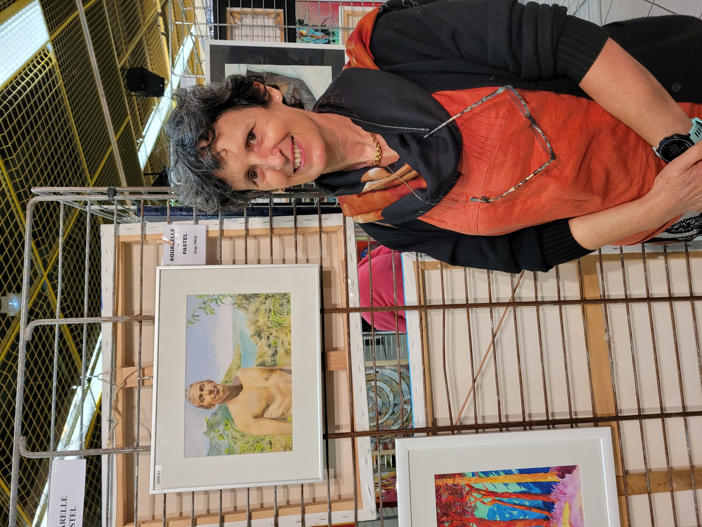

J'ai exposé mes tableaux à plusieurs reprises
Antibes (06, France) - Spectacles Femin'Arte - FEMIN'EXPO Médiathèque Albert Camus - 28 Février au samedi 11 Mars
Vernissage le 4 Mars 16h [Expo de groupe sur le thème "Dansons, sinon nous sommes perdus! (Pina Bausch)"]
Antibes (06, France) - "Faîtes de la peinture" (association les amis du musée Picasso)
Antibes (06, France) - "Faîtes de la peinture" (association les amis du musée Picasso)
2ème prix, catégorie Aquarelle/pastel
